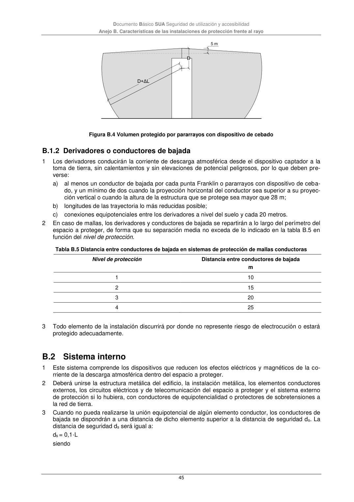

DB-SUA Seguridad de utilización y accesibilidad · edición 2022-06-14 · capa oficial
Documento DB-SUA-oficial · SHA-256 del PDF 3cfb5bbb135e8f02faebd8b844e03e8947994c18d4c9e675a7d2aa37d1cd5958
Copia fiel del PDF fuente · Fuente oficial
Ficha de la disposición en la fuente oficial
Formatos: JSON del segmento · Markdown
B.2 Sistema interno 1 Este sistema comprende los dispositivos que reducen los efectos eléctricos y magnéticos de la co- rriente de la descarga atmosférica dentro del espacio a proteger. 2 Deberá unirse la estructura metálica del edificio, la instalación metálica, los elementos conductores externos, los circuitos eléctricos y de telecomunicación del espacio a proteger y el sistema externo de protección si lo hubiera, con conductores de equipotencialidad o protectores de sobretensiones a la red de tierra. 3 Cuando no pueda realizarse la unión equipotencial de algún elemento conductor, los conductores de bajada se dispondrán a una distancia de dicho elemento superior a la distancia de seguridad ds. La distancia de seguridad ds será igual a: ds = 0,1·L siendo Documento Básico SUA Seguridad de utilización y accesibilidad Anejo B. Características de las instalaciones de protección frente al rayo 46 L la distancia vertical desde el punto en que se considera la proximidad hasta la toma de tierra de la masa metálica o la unión equipotencial más próxima. En el caso de canalizaciones exteriores de gas, la distancia de seguridad será de 5 m como mínimo.
